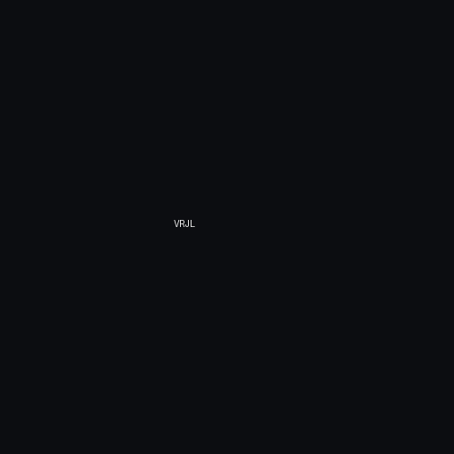

Drivers
A home for players who want to compete, improve and represent their team.
VRJL COMMUNITY
WELCOME TO VRJL
Virtual Racing Junior League — built for drivers, teams and competition. Your VRJL journey starts here.
THE LEAGUE
VRJL brings together players and teams in an organised virtual racing environment. More features will be added to the website over time.
A home for players who want to compete, improve and represent their team.
VRJL COMMUNITYOrganised teams, league competition and a place to build your reputation.
TEAM SYSTEMFixtures, results, statistics and league features are being built for VRJL.
DEVELOPINGCOMING TO THE SITE
This first version keeps things simple. The dashboard, accounts, ID submissions and support system can be added next.
Submit and manage your VRJL player information.
Get help with bot, owner, league and website issues.
A future account dashboard powered by Supabase.
VRJL COMMUNITY
Join the official VRJL Discord.